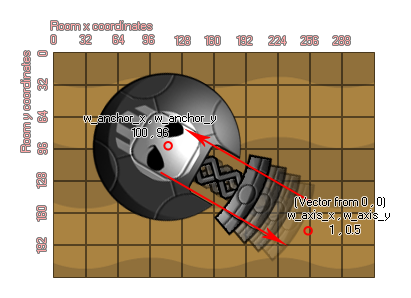
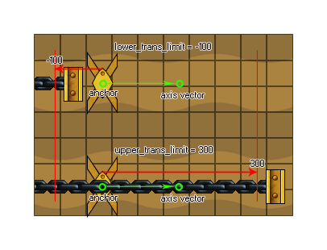

physics_joint_prismatic_create(inst1, inst2, w_anchor_x, w_anchor_y, w_axis_x, w_axis_x, lower_trans_limit, upper_trans_limit, limit, max_motor_force, motor_speed, motor, col)
| Argument | La description |
|---|---|
| inst1 | La première instance à se connecter avec l'articulation |
| inst2 | La deuxième instance pour se connecter avec l'articulation |
| w_anchor_x | La coordonnée x où l'articulation est ancrée, dans le monde du jeu |
| w_anchor_y | La coordonnée y où l'articulation est ancrée, dans le monde du jeu |
| w_axis_x | La composante x du vecteur d'axe |
| w_axis_y | La composante y du vecteur d'axe |
| lower_trans_limit | La limite inférieure autorisée pour le mouvement articulaire |
| upper_trans_limit | La limite inférieure autorisée pour le mouvement articulaire |
| limit | Que ce soit pour limiter le mouvement de l'articulation (vrai) ou non (faux) |
| max_motor_force | Définit la vitesse de déplacement maximale pour le moteur |
| motor_speed | C'est la vitesse à laquelle le moteur doit se déplacer |
| motor | Si le moteur doit être actif (vrai) ou non (faux) |
| col | Si les deux instances peuvent entrer en collision (vrai) ou non (faux) |
Retourne: index de l'articulation
Comme une articulation rotulienne, l'articulation prismatique n'a qu'un degré de liberté, mais avec cette articulation elle est directionnelle par rapport à un axe plutôt que rotationnelle et empêche en fait toute forme de rotation. Voici une image pour vous aider à visualiser comment cela fonctionne:

Nous avons deux instances jointes au point d'ancrage, avec un axe de mouvement défini à partir du vecteur les deux coordonnées w_axis x / y par rapport aux coordonnées (0,0) du monde physique (donc une composante x de 0 et une composante de 1 (0,1) ferait de l'articulation un joint prismatique vertical). Cette articulation ne peut alors se déplacer que par rapport à cet axe, comme un ressort ou un piston. Si vous définissez la limite de transmission inférieure ou supérieure, vous limitez fondamentalement la quantité de mouvement le long de cet axe, où la position 0 est l'endroit exact que vous avez défini avec w_anchor x / y, donc une valeur négative irait à la "gauche" de ce point le long de l'axe et une valeur positive à la "droite" comme le montre le diagramme suivant (se rendre compte que "gauche" et "droite" sont des termes relatifs!):  Vous pouvez également définir le joint comme ayant un moteur ou non. Cela signifie que lorsqu'il n'est pas influencé par une collision, l'articulation se déplace dans une direction le long de l'axe. cette direction est définie par la vitesse du moteur, avec un nombre positif étant vers les coordonnées de l'axe ("droite") et un nombre négatif étant vers le point d'ancrage ("gauche"). L'argument "max_motor_force" est utilisé pour limiter la vitesse du mouvement de sorte que vous n'obteniez pas un moteur qui accélère perpétuellement et pour limiter l'influence qu'une collision peut avoir sur le mouvement. De cette façon, vous pouvez utiliser un moteur à joint pour simuler le frottement des joints en réglant la vitesse de l'articulation à zéro et la force maximale à une valeur faible mais significative. Le moteur essayera d'empêcher le joint de bouger, mais cédera à une charge significative.
Comme pour tous les joints, si vous définissez la valeur "col" sur true alors les deux instances peuvent interagir et entrer en collision les unes avec les autres, mais seulement si elles ont des événements de collision, mais si elle est définie sur false, ils ne vont pas entrer en collision, peu importe quoi.
var mainFixture, o_id;
mainFixture = physics_fixture_create();
physics_fixture_set_circle_shape(mainFixture,
sprite_get_width(sprite_index) / 2);
o_id = instance_create_layer(x+25, y, "Instances", obj_Piston);
physics_fixture_bind(mainFixture, id);
physics_fixture_bind(mainFixture, o_id);
physics_joint_prismatic_create(id, o_id, x, y, 0, 10, 0, 0, 0, 5,
0, 1, 1);
physics_fixture_delete(mainFixture);
Le code ci-dessus crée et définit un nouvel appareil, puis crée une instance de "obj_Piston", liant l'appareil créé aux deux nouveaux objets. Ils sont ensuite joints par un joint prismatique avec la position d'ancrage aux mêmes coordonnées x / y de la première instance et un axe formé par le vecteur de la position x / y et l'axe x / y (dans ce cas 0,10, qui est "bas"). Il n'y a pas de limite à la quantité de mouvement le long de cet axe, mais nous avons ajouté un moteur à 0 vitesse et une force maximale de 5 pour simuler le frottement des articulations.